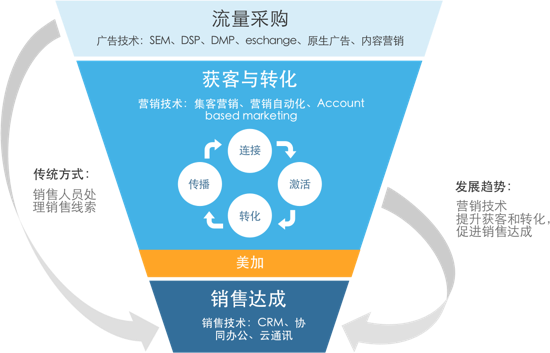
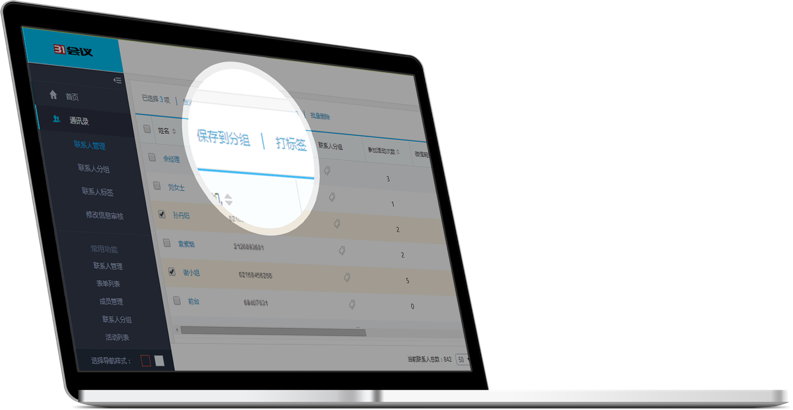
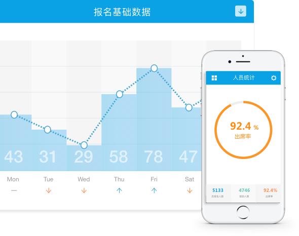

63% 的公司正通过集成的营销自动化超越它的竞争对手
78% 高绩效市场人员指出营销自动化系统可提高营销ROI
营销自动化为企业用33%的低成本创造
50%的营销线索
企业使用营销自动化系统后节省人力创意制作时间约
15%

360度全渠道营销集客
继承微信、微站、邮件、短信、海报等全营销渠道，形成跨
平台、跨终端的统一管理，通过各渠道触点全面接入客户的
属性、行为、运营标签数据，将各平台的流量转化为潜客，
极大提升市场营销人员的工作效率，降低营销成本。
多元化互动工具吸客
红包、优惠券、打赏、分销、直播等几十种热门互动工具，
供不同营销场景选用，快速建立客户连接，有效吸引潜客，
并提高潜客转化。
活动管理一站式全流程数字化
用数字化手段帮助企业一站式管理全年活动及每个活动的全流
程，从活动前的展示、推广、注册报名，到活动现场的签到、
互动、直播等，实时分析追踪参与者属性和行为数据，沉淀累
积全年活动数据，使企业全面洞察活动情况，提升活动ROI。

潜客管理标签化
对各渠道触点引入的潜客线索进行追踪、统计和标签化、分
组管理，通过数据分析与挖掘，形成全面的用户画像和客户
洞察，极大提升市场营销的精准性和战略决策的准确性，提
升ROI。
潜客培育自动化
针对大量早期潜客线索，根据个人属性、来源渠道、行为等组
合设置千变万化的营销活动，自动触发营销工作流程，个性化
推送图文、模板消息、邮件、短信等，帮助营销人员高效自动
完成各种复杂的营销任务，使早期潜客线索逐步转化为可销售
跟进状态，缩短成交时间。

数据分析可视化
对营销过程产生的多源实时数据进行整合、分析和统计，形
成多视角、多维度的可视化数据报表，通过Web和移动端
进行展示，使企业不同角色都可以从数据中获得深刻洞察，
从而探索更多与数据的互动方式。
经典案例

华润三九
使用31美加管理全国处方市场部年度活动的发布、报名、签到，以及粉丝营销、互动、微信公号托管管理。
华润三九
使用31美加管理全国处方市场部年度活动的发布、报名、签到，以及粉丝营销、互动、微信公号托管管理。

肯纳金属
用31美加进行亚太区的年度活动管理、数据管理、公号运营。管理活动的发布、报名、签到、统计报表等，实现数据沉淀、标签化和持续运营。
肯纳白金
用31美加进行亚太区的年度活动管理、数据管理、公号运营。管理活动的发布、报名、签到、统计报表等，实现数据沉淀、标签化和持续运营。

上海市信息服务业行业协会
协会团队具有极强的创新服务意识，希望能够高效服务会员单位。协会应用31美加高效管理会员与管理活动，并定期查看各种统计数据，是数字化协会运营的典范。
上海市信息服务业行业协会
协会团队具有极强的创新服务意识，希望能够高效服务会员单位。协会应用31美加高效管理会员与管理活动，并定期查看各种统计数据，是数字化协会运营的典范。

第一财经
第一财经的用户组正在践行受众的统一管理与移动端的连接。31美加支持第一财经的用户管理、用户分析、活动连接等。在每个活动现场，因互动场景的增多，第一财经正在激发用户的热情，进而增加了用户的粘性与活跃度、忠诚度。
第一财经
第一财经的用户组正在践行受众的统一管理与移动端的连接。31美加支持第一财经的用户管理、用户分析、活动连接等。在每个活动现场，因互动场景的增多，第一财经正在激发用户的热情，进而增加了用户的粘性与活跃度、忠诚度。